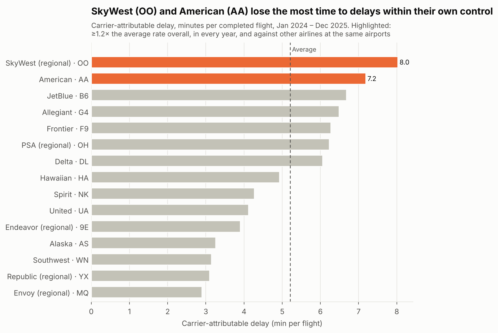
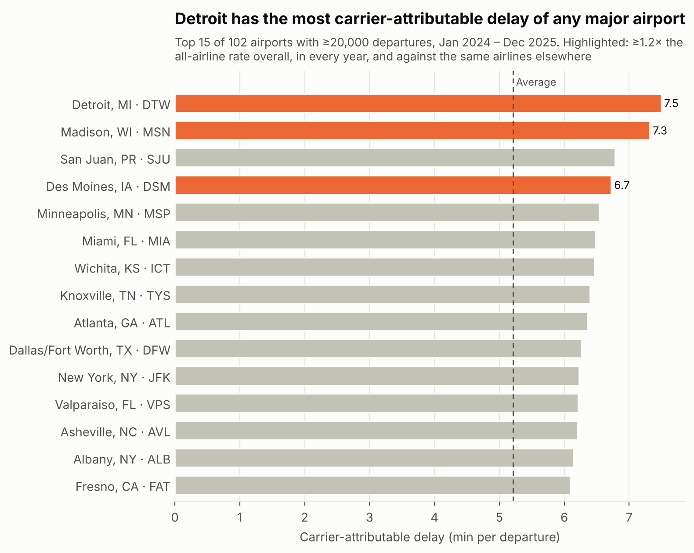
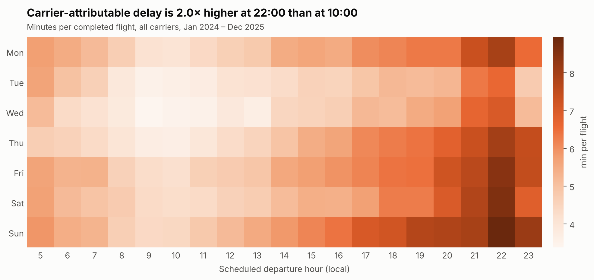

Data analytics case study
Where airlines lose time
Which US carriers and airports have more delay within their own control than everyone else, and when does it happen?
This analysis uses US DOT (BTS) flight data rather than Singapore data, since CAAS/data.gov.sg only publishes aggregate monthly figures for Changi, and no flight-level, cause-coded delay data is publicly available. BTS was chosen as the best available public dataset with the granularity needed for this kind of analysis.
The problem
Airlines can't control the weather or air traffic. But a third of recorded delay minutes in US flying (33%) come from causes inside the airline's own operation: maintenance, crew, cleaning, fuelling and baggage. That's where management action actually pays off. The question: which airports or carriers show disproportionately high carrier-attributable delay, and does time of day or day of week make it worse?
Approach
- Data: 14.1M flights from the US Bureau of Transportation Statistics, which records the cause of every delay of 15+ minutes. Cancelled and diverted flights are excluded from the delay measures.
- Measure: carrier-attributable delay minutes per flight. It's called carrier-attributable, not "mechanical", because BTS records maintenance in the same field as crew, cleaning and baggage.
- "Disproportionate" means at least 1.2× the all-airline average in each year, and still that high when compared with other airlines at the same airports. That way no one is penalised just for flying from difficult airports.
- Robustness: re-run without the July 2024 CrowdStrike IT outage. SkyWest and American stay flagged; Frontier, just under the bar in 2024, also crosses it.
What the data shows
1. Two carriers stand out
SkyWest (a regional airline flying for United, Delta, American and Alaska) averages 8.0 minutes of carrier-attributable delay per flight, and American 7.2, against an all-airline average of 5.2. Both run at about 1.3× the rate of other airlines at the same airports, in 2024 and in 2025. They fail differently: SkyWest's delays are slightly rarer but nearly twice as long, and American's are more frequent.

2. Airports matter far less than airlines
Detroit, Madison and Des Moines are flagged, but together they account for about 5,600 excess delay hours a year. The two flagged carriers account for 68,100.

3. Timing makes it worse, and the first flights of the day are where the two carriers fall furthest behind
Across all airlines, carrier-attributable delay is twice as high at 22:00 as at 10:00, and Sunday is the worst day. But SkyWest and American lose the most ground before 09:00, when airlines as a whole run better than their daily average. There they run 1.76× and 1.51× the all-airline rate.

Recommendation
Fix the first flights of the day at SkyWest and American.
Bringing their pre-09:00 departures down to the all-airline pre-09:00 rate would remove about 20,600 delay hours a year (10,300 each). Likely places to look are overnight maintenance sign-off, crew turning up on time and getting aircraft ready at the airports where their first flights of the day leave from. The estimate is conservative, because a late first flight also delays later flights, and that knock-on delay isn't counted here.
Limits
The data only records causes for delays of 15+ minutes. It can't tell maintenance apart from crew or cleaning, and airlines report the causes themselves. It covers US domestic flying only, so results may not carry over to other markets.